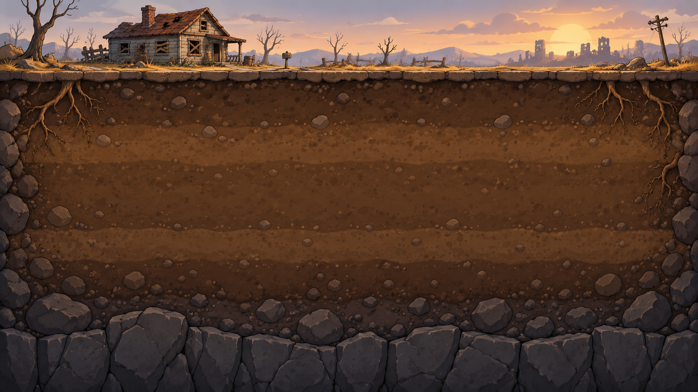

Settlers
Click a settler to inspect their needs.
Ten settlers found this forgotten shelter together. Nobody dies here — if someone is sick, hurt, hungry, or exhausted, they slow down and take care of themselves.

Click a settler to inspect their needs.
Click a room, an empty excavation square, or a settler.
Quiet little updates from underground.